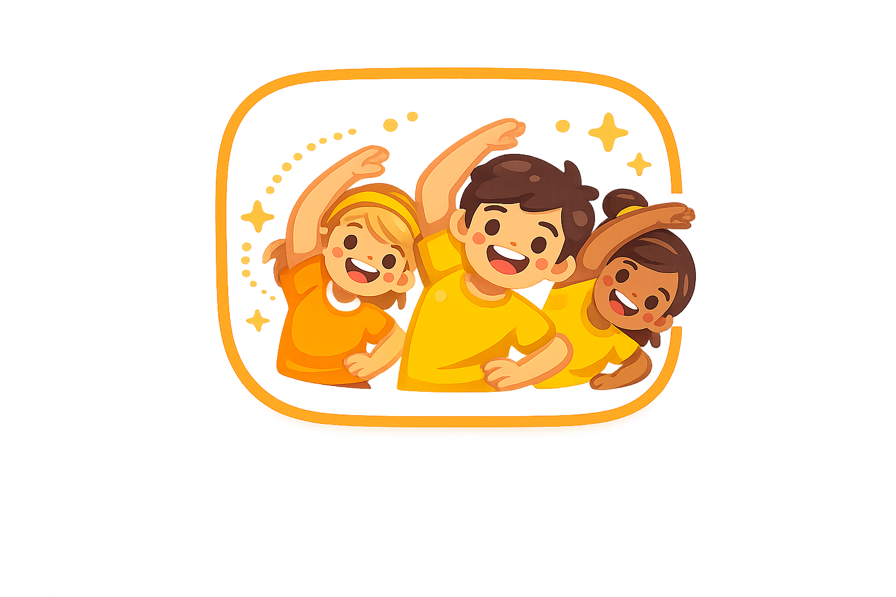

Pausas Activas
Dale a tu clase un reinicio rápido con movimiento, atención plena, estiramiento y actividades divertidas.
Elige una Categoría
Selecciona el tipo de reinicio que tu clase necesita.
Consejo: usa esta herramienta cuando los estudiantes necesiten un descanso corto antes de pasar a la próxima actividad.
Todas
Pausa Activa
🦘
Salta 10 Veces
Ponte de pie y salta suavemente 10 veces en tu lugar.
Pausas Favoritas
Consejo: las pausas activas son ideales entre lecciones, después de evaluaciones, antes de transiciones o cuando la clase necesita recuperar energía.